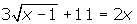
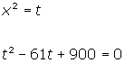
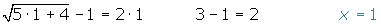
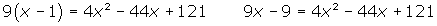
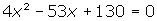
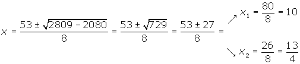
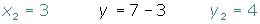

Ejercicios y problemas resueltos de ecuaciones de segundo grado
1Resuelve las siguientes ecuaciones:
17x2 + 21x − 28 = 0
2−x2 + 4x − 7 = 0
312x2 − 3x = 0
4
2Halla las soluciones de las ecuaciones:
1
2
3Resuelve:
1x4 − 61x2 + 900 = 0
2x4 − 25x2 + 144 = 0
4Resuelve:
1
2
5Hallar las raíces de:
12x3 − 7x2 + 8x − 3 = 0
2x3 − x2 − 4 = 0
36x3 + 7x2 − 9x + 2 = 0
6Resolver los siguientes sistemas de ecuaciones:
1
2
3
4
7Determinar k de modo que las dos raíces de la ecuación x2 − kx + 36 = 0 sean iguales.
8La suma de dos números es 5 y su producto es −84. Halla dichos números.
9Dentro de 11 años la edad de Pedro será la mitad del cuadrado de la edad que tenía hace 13 años. Calcula la edad de Pedro.
10Para vallar una finca rectangular de 750 m² se han utilizado 110 m de cerca. Calcula las dimensiones de la finca.
11Los tres lados de un triángulo rectángulo son proporcionales a los números 3, 4 y 5. Halla la longitud de cada lado sabiendo que el área del triángulo es 24 m².
12Un jardín rectangular de 50 m de largo por 34 m de ancho está rodeado por un camino de arena uniforme. Halla la anchura de dicho camino si se sabe que su área es 540 m².
13Calcula las dimensiones de un rectángulo cuya diagonal mide 75 m, sabiendo que es semejante a otro rectángulo cuyos lados miden 36 m y 48 m respectivamente.
14Halla un número entero sabiendo que la suma con su inverso es  .
.
15Dos números naturales se diferencian en dos unidades y la suma de sus cuadrados es 580. ¿Cuáles son esos números?
16Dos caños A y B llenan juntos una piscina en dos horas, A lo hace por sí solo en tres horas menos que B. ¿Cuántas horas tarda a cada uno separadamente?
17El producto de dos números es 4, y la suma de sus cuadrados 17. ¿Cuáles son esos números?
18Halla una fracción equivalente a cuyos términos elevados al cuadrado sumen 1184.
19Un cliente de un supermercado ha pagado un total de 156 € por 24 l de leche, 6 kg de jamón serrano y 12 l de aceite de oliva. Calcular el precio de cada artículo, sabiendo que 1 l de aceite cuesta el triple que 1 l de leche y que 1 kg de jamón cuesta igual que 4 l de aceite más 4 l de leche.
20Un videoclub está especializado en películas de tres tipos: infantiles, oeste americano y terror. Se sabe que:
El 60% de las películas infantiles más el 50% de las del oeste representan el 30% del total de las películas.
El 20% de las infantiles más el 60% de las del oeste más del 60% de las de terror al representan la mitad del total de las películas.
Hay 100 películas más del oeste que de infantiles.
Halla el número de películas de cada tipo.
- 1
- 2
- 3
- 4
- 5
- 6
- 7
- 8
- 9
- 10
- 11
- 12
- 13
- 14
- 15
- 16
- 17
- 18
- 19
- 20
Ejercicio 1 resuelto
Resuelve las siguientes ecuaciones:
Soluciones:17x2 + 21x − 28 = 0
x2 +3x − 4 = 0

2−x2 + 4x − 7 = 0
x2 − 4x + 7 = 0
x2 − 4x + 4 = 0
312x2 − 3x = 0
4x2 − x = 0
x · (4x −1) = 0
x = 0
4x − 1 = 0 x = 1/4
4

Ejercicio 2 resuelto
Resuelve:
Soluciones:1
2
Ejercicio 3 resuelto
Resuelve:
Soluciones:1x4 − 61x2 + 900 = 0


2x4 − 25x2 + 144 = 0

Ejercicio 4 resuelto
Resuelve:
Soluciones:1




2





Ejercicio 5 resuelto
Hallar las raíces de:
Soluciones:12x3 − 7x2 + 8x − 3 = 0
P(1) = 2 · 13 − 7 · 12 + 8 · 1 − 3 = 0
(x −1 ) · (2x2 − 5x + 3 ) = 0
P(1) = 2 · 1 2 −5 · 1 + 3 = 0
(x −1 )2 · (2x −3 ) = 0
Las raíces son: x = 3/2 y x = 1
2x3 − x2 − 4 = 0
{±1, ±2, ±4 }
P(1) = 1 3 − 1 2 − 4 ≠ 0
P(−1) = (−1) 3 − (−1) 2 − 4 ≠ 0
P(2) = 2 3 − 2 2 − 4 = 8 − 4 − 4 = 0
(x − 2) · (x2+ x + 2 ) = 0
x2+ x + 2 = 0
(x − 2) · (x2+ x + 2 ) = 0
Raíz: x = 2.
36x3 + 7x2 − 9x + 2 = 0
{±1, ±2}
P(1) = 6 · 13 + 7 · 12 − 9 · 1 + 2 ≠ 0
P(−1) = 6 · (−1)3 + 7 · (−1)2 − 9 · (−1) + 2 ≠ 0
P(2) = 6 · 2 3 + 7 · 2 2 − 9 · 2 + 2 ≠ 0
P(−2) = 6 · (−2)3 + 7 · (−2)2 − 9 · (−2) + 2 = − 48 + 28 + 18 + 2 = 0
(x+2) · (6x2 −5x +1) = 0
6x2 −5x +1 = 0
6 (x + 2) · (x − 1/2) · (x − 1/3) = 0
Raíces: x = − 2, x = 1/2 y x= 1/3
Ejercicio 6 resuelto
Resolver los siguientes sistemas de ecuaciones:
Soluciones:1


2


3
4
Ejercicio 7 resuelto
Determinar k de modo que las dos raíces de la ecuación x2 − kx + 36 = 0 sean iguales.
b2 − 4ac = 0
k2 − 4 · 36 = 0 k2 = 144
Ejercicio 8 resuelto
La suma de dos números es 5 y su producto es −84. Halla dichos números.
x2 − Sx + P = 0


Ejercicio 9 resuelto
Dentro de 11 años la edad de Pedro será la mitad del cuadrado de la edad que tenía hace 13 años. Calcula la edad de Pedro.
Edad actual x
x
Edad hace 13 años  x −13
x −13
Edad dentro de 11 años  x + 11
x + 11


Edad actual  21
21
Ejercicio 10 resuelto
Para vallar una finca rectangular de 750 m² se han utilizado 110 m de cerca. Calcula las dimensiones de la finca.

Semiperímetro 55
55
Base  x
x
Altura  55 − x
55 − x
x · (55 − x) = 750
x2 − 55x + 750 = 0
x = 25 x = 30
Las dimensiones de la finca son 30 m y 25 m .
Ejercicio 11 resuelto
Los tres lados de un triángulo rectángulo son proporcionales a los números 3, 4 y 5. Halla la longitud de cada lado sabiendo que el área del triángulo es 24 m².

1er lado (base) 3x
3x
2º lado (altura)  4x
4x
3er lado  5x
5x


1er lado  6 m
6 m
2º lado  8 m
8 m
3er lado  10 m
10 m
Ejercicio 12 resuelto
Un jardín rectangular de 50 m de largo por 34 m de ancho está rodeado por un camino de arena uniforme. Halla la anchura de dicho camino si se sabe que su área es 540 m².

(50 + 2x) · (34 + 2x) − 50 · 34 = 540
4x2 + 168x − 540 = 0 x2 + 42x − 135 = 0
x = 3 y x = −45
La anchura del camino es 3 m .
Ejercicio 13 resuelto
Calcula las dimensiones de un rectángulo cuya diagonal mide 75 m, sabiendo que es semejante a otro rectángulo cuyos lados miden 36 m y 48 m respectivamente.
Base  48x : 12 = 4x
48x : 12 = 4x
Altura  36x : 12 = 3x
36x : 12 = 3x
(4x)2 + (3x)2 = 752
25x2 = 5625
x2 = 225 x = 15
Base  4 · 15 = 60 m
4 · 15 = 60 m
Altura  3 · 15 = 45 m
3 · 15 = 45 m
Ejercicio 14 resuelto
Halla un número entero sabiendo que la suma con su inverso es  .
.

Ejercicio 15 resuelto
Dos números naturales se diferencian en dos unidades y la suma de sus cuadrados es 580. ¿Cuáles son esos números?
1er número  x
x
2º número  x + 2
x + 2


1er número  16
16
2º número  18
18
Ejercicio 16 resuelto
Dos caños A y B llenan juntos una piscina en dos horas, A lo hace por sí solo en tres horas menos que B. ¿Cuántas horas tarda a cada uno separadamente?
Tiempo de A  x
x
Tiempo de B  x+ 3
x+ 3
A 
B 
A y B 


Tiempo de A  3 horas
3 horas
Tiempo de B  6 horas
6 horas
Ejercicio 17 resuelto
Un cliente de un supermercado ha pagado un total de 156 € por 24 l de leche, 6 kg de jamón serrano y 12 l de aceite de oliva. Calcular el precio de cada artículo, sabiendo que 1 l de aceite cuesta el triple que 1 l de leche y que 1 kg de jamón cuesta igual que 4 l de aceite más 4 l de leche.
leche  x
x
jamón  y
y
aceite  z
z


leche  1 €
1 €
jamón  16 €
16 €
aceite  3 €
3 €
Ejercicio 18 resuelto
Un videoclub está especializado en películas de tres tipos: infantiles, oeste americano y terror. Se sabe que:
El 60% de las películas infantiles más el 50% de las del oeste representan el 30% del total de las películas.
El 20% de las infantiles más el 60% de las del oeste más del 60% de las de terror al representan la mitad del total de las películas.
Hay 100 películas más del oeste que de infantiles.
Halla el número de películas de cada tipo.
infantiles  x
x
oeste  y
y
terror  z
z


infantiles  500 películas
500 películas
oeste  600 películas
600 películas
terror  900 películas
900 películas
Ejercicio 19 resuelto
El producto de dos números es 4, y la suma de sus cuadrados 17. ¿Cuáles son esos números?

Ejercicio 20 resuelto
Halla una fracción equivalente a cuyos términos elevados al cuadrado sumen 1184.
 Ejercicios
Ejercicios